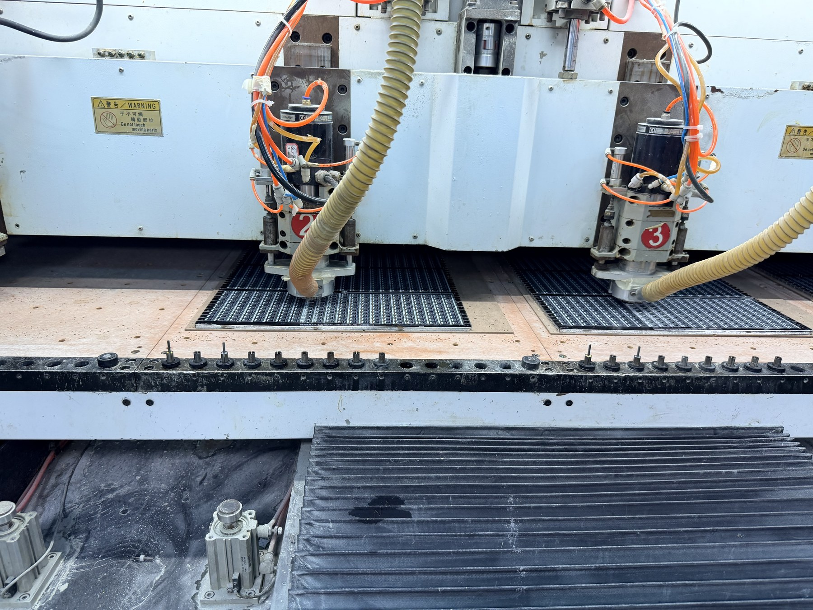

Production equipment photographed during sourcing work in China.
With APEC’s leaders’ meeting taking place in Shenzhen this year, I’ve been thinking about the everyday side of cross-border cooperation. I run a sourcing business in South China, and I would like more small businesses to feel confident working with partners overseas. In practice, that confidence needs clear information and a sensible next step.
Start with the job the product needs to do
When a buyer shares a product photo or drawing, my first questions are about the intended use. Where will it be used? Which dimensions, materials or functions matter? Is the request for a sample, a trial quantity or a repeatable production order?
These details give a supplier something concrete to respond to. They also give the buyer a better basis for comparing quotations. Without the same requirement, two prices may describe different offers.
Make ‘we can do it’ more specific
A supplier’s answer needs to connect to the actual project. What process would be used? Is the item already in production, or does it require development? What can be shown in a sample, drawing, document or factory discussion? What still needs to be checked?
These questions are part of understanding the offer. A photograph of equipment, for example, provides context, but it does not by itself confirm the material, tolerance, delivery date or production arrangements for a particular order.
Leave the conversation with a clear next step
Communication across languages is easier when both sides can refer to the same information. A marked-up drawing, an agreed sample revision or a short written recap can make the next conversation more useful.
I try to make the open points visible: what has been confirmed, what we are waiting for, and who is checking it. My banking background has made me comfortable asking another question before moving ahead. In sourcing, that habit helps me keep the discussion focused on the information available.
What APEC means to me
This year’s APEC priorities include openness, innovation and cooperation. My hope is that more small businesses get the chance to find the right partners across the region. The day-to-day work still matters: someone needs to explain the requirement, ask the practical questions and follow up.
That is the part I can help with here in China. If you have a sourcing project in mind, a non-confidential drawing or reference photo, intended use, target market and expected quantity are useful places to start. What is the main question you need answered before taking the next step?
APEC background
The leaders’ meeting is scheduled for 18–19 November 2026 in Shenzhen. Background checked on 16 November 2026: APEC 2026 priorities — APEC Secretariat, Shenzhen leaders’ meeting announcement — Ministry of Foreign Affairs.